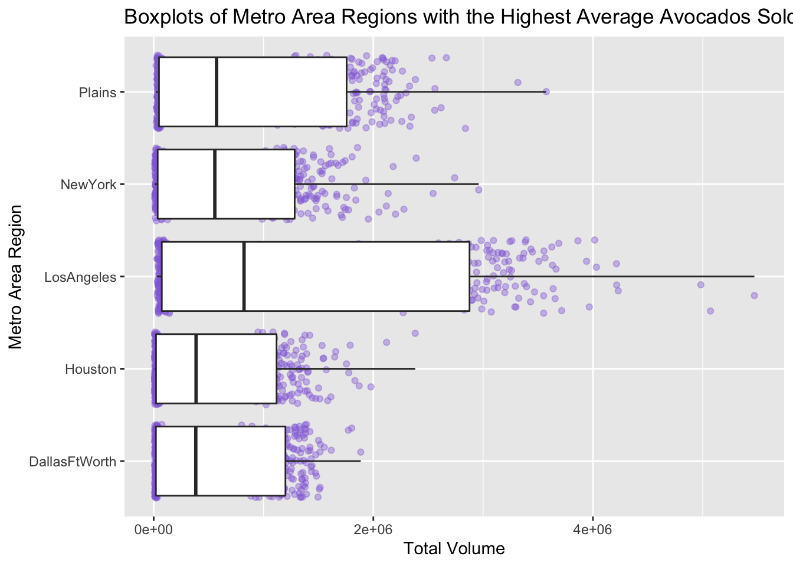
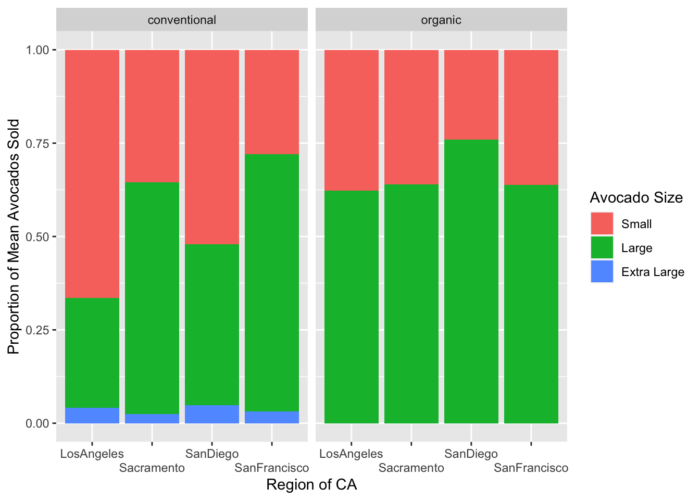

Code
library(tidyverse)
library(here)
library(forcats)library(tidyverse)
library(here)
library(forcats)# Code for question 1!
avocado <- read_csv(here::here("supporting_artifacts",
"learning_targets",
"Lab 4",
"avocado.csv"))This data set includes information about the weekly retail scan data from 2015 to 2018 for the national retail volume (units) and price of HASS avocados. The data set includes information about the average prices for avocados, whether they are organic or conventional, the Product Lookup Codes (PLU’s) which relates to the size of the avocado, the date of observation, the size of the bag, and the region of the observation which includes city, state, and region.
#looking at region variable
avocado |>
distinct(region, keep_all = TRUE)
#cleaning dataset
avocado_clean <- avocado|>
rename(total_volume = `Total Volume`,
total_bags = `Total Bags`,
large_HASS = '4225',
small_HASS = '4046',
xl_HASS = '4770')
#region df
avocado_region <- data.frame(region = c('GreatLakes',
'Midsouth',
'Northeast',
'SouthCentral',
'Southeast',
'West',
'WestTexNewMexico'))
#total df
avocado_total <- data.frame(region = c('TotalUS'))
#state df
avocado_state <- data.frame(region = c('California', 'South Carolina'))
#city df
avocado_city <- avocado_clean |>
anti_join(avocado_region, by = "region") |>
anti_join(avocado_state, by = "region") |>
anti_join(avocado_total, by = "region")avocado_clean |>
semi_join(avocado_region, by = "region") |>
filter(year == 2017, type == "organic") |>
select(region, small_HASS) |>
group_by(region) |>
summarize(max_smallHASS = max(small_HASS)) |>
slice_max(max_smallHASS)# A tibble: 1 × 2
region max_smallHASS
<chr> <dbl>
1 Northeast 127052.The major region that sold the most organic, small Hass avocados in 2017 is Northeast.
avocado_clean |>
semi_join(avocado_region, by = "region") |>
separate(col = Date,
sep = "-",
into = c("Year", "Month", "Day")
# remove = False --> if want to keep the date sequence
) |>
group_by(Month) |>
summarize(sum_total_vol = sum(total_volume)) |>
slice_max(sum_total_vol)# A tibble: 1 × 2
Month sum_total_vol
<chr> <dbl>
1 02 525348600.The month of January had the highest volume of avocado sales at 533,030,497 avocados sold for the regions dataset.
top_5 <- avocado_city |>
select(total_volume, region) |>
group_by(region) |>
summarize(mean_total_vol = mean(total_volume)) |>
slice_max(mean_total_vol, n = 5)
top_5# A tibble: 5 × 2
region mean_total_vol
<chr> <dbl>
1 LosAngeles 1502653.
2 Plains 920676.
3 NewYork 712231.
4 DallasFtWorth 616625.
5 Houston 601088.ggplot(avocado_city |>
semi_join(top_5, by = "region"),
mapping = aes(x = total_volume, y = region)) +
geom_jitter(alpha = 0.4, color = "mediumpurple") +
geom_boxplot() +
labs(title = "Boxplots of Metro Area Regions with the Highest Average Avocados Sold",
x = "Total Volume",
y = "Metro Area Region")
Los Angeles, Plains, Dallas Ft. Worth, Houston, New York were the top five regions with the highest averages of most avocados sold.
CA_cities <- data.frame(region = c('LosAngeles', 'SanDiego', 'Sacramento', 'SanFrancisco'))
avocado_CA <- avocado_clean |>
semi_join(CA_cities, by = "region") price_diff <- avocado_CA |>
select(region, type, AveragePrice) |>
group_by(region, type) |>
summarize(AveragePrice_Region_Type = mean(AveragePrice)) |>
pivot_wider(names_from = type,
values_from = AveragePrice_Region_Type) |>
mutate(price_diff = abs(conventional - organic)) |>
arrange(desc(price_diff))
price_diff# A tibble: 4 × 4
# Groups: region [4]
region conventional organic price_diff
<chr> <dbl> <dbl> <dbl>
1 SanFrancisco 1.40 2.21 0.814
2 Sacramento 1.27 1.97 0.695
3 SanDiego 1.06 1.73 0.673
4 LosAngeles 0.976 1.46 0.479most_diff <- price_diff |>
slice_head(n = 1)
price_diff |>
ggplot(mapping = aes(x = region, y = price_diff)) +
geom_point(color = c("dodgerblue4",
"gold3",
"darkolivegreen4",
"coral2")) +
labs(x = "Region of Avocado",
y = "Difference in Average Price of Avocado ($)"
)
San Francisco is the region in California with the largest difference in average price of avocado between organic and conventional avocados compared to the other California regions. From the graph we can see that San Francisco has the largest difference in average price of avocados at 0.81 cents.
prop_CA <- avocado_CA |>
select(region, type, small_HASS, large_HASS, xl_HASS, total_volume) |>
group_by(region, type) |>
summarize(mean_small = mean(small_HASS),
mean_large = mean(large_HASS),
mean_xl = mean(xl_HASS),
total_mean = mean_small + mean_large + mean_xl) |>
# mean_total_volume = mean(total_volume)) |>
mutate(prop_small = mean_small/total_mean,
prop_large = mean_large/total_mean,
prop_xl = mean_xl/total_mean) |>
pivot_longer(prop_small:prop_xl,
names_to = 'proportion_sizes',
values_to = 'mean_proportion')
prop_CA |>
mutate(
proportion_sizes = fct_recode(proportion_sizes,
"Small" = "prop_small",
"Large" = "prop_large",
"Extra Large" = "prop_xl"),
proportion_sizes = fct_relevel(proportion_sizes,
"Small", "Large", "Extra Large")
) |>
ggplot(mapping = aes(x = region,
y = mean_proportion,
fill = proportion_sizes )) +
geom_col() +
facet_wrap(~type) +
labs(x = "Region of CA",
y = "Proportion of Mean Avocados Sold"
) +
scale_x_discrete(guide = guide_axis(n.dodge = 2)) +
scale_fill_discrete(name="Avocado Size")
# Resource: https://stackoverflow.com/questions/33529116/ggplot2-stagger-axis-labels
# Resource: http://www.cookbook-r.com/Graphs/Legends_(ggplot2)/